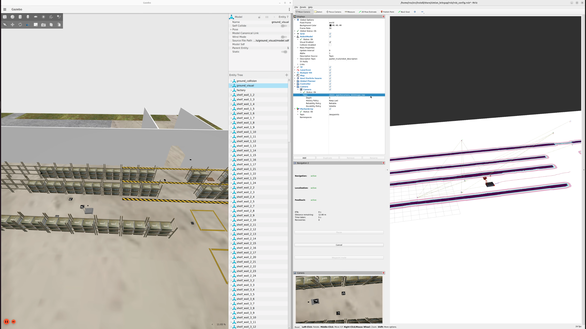

SIMLAN, Simulation for Multi-Camera Robotics (3.0.0)
This simulation environment, based on the Gazebo Ignition simulator and ROS2, resembles a Volvo trucks warehouse and serves as a playground for rapid prototyping and testing of systems that rely on multi-camera setup for perception, monitoring, localization or even navigation. This project is inspired by GPSS (Generic photo-based sensor system) that utilizes ceiling mounted cameras, deep learning and computer vision algorithms, and very simple transport robots.
[ GPSS demo]
GPSS demo]
SIMLAN Features [ SIMLAN demo]
- Ignition Gazebo
- Library of assets
- Real-World environment inspired design (camera position and warehouse layout)
- ROS 2 interfaces (Humble and Jazzy)
- ArUco marker localization
- Simple GPSS (Generic Photo-based Sensor System) navigation
- Multi-Robot localization and navigation using Nav2
- Bird's-Eye view projection
- Multi-Sensor Support (LiDAR, RGB camera, semantic segmentation, Depth etc.)
- Geofencing for safe zones and safestop on collision
- Motion capture for Human-Robot Collaboration/Interaction (HRC/HRI)
Please click the youTube link below to view the SIMLAN demo video:

Here are list of advantages of using SIMLAN Multi-Camera system
- Rapid prototyping and iteration of ML based algorithm. (e.g. reinforcement learning)
- Enhanced monitoring and coordination using bird eye view
- Simplified robot design and maintenance.
- Extendible with additional ML based vision systems
- Safety testing without physical risk or privacy concerns
- Scalable and reproducible testing (CI/CD)
- Cost-effective development
Installation [ Demo]
Dependencies
Ubuntu 24.04: use instruction in dependencies.md#linux-dependencies to install docker and ensure that your linux user account has docker access.
Attention: Make sure to restart the computer (for the changes in group membership to take effect.) before proceeding to the next step.
Windows 11: use instruction in dependencies.md#windows-dependencies to install dependencies.
Production environment: follow installation procedure used in .devcontainer/Dockerfile to install dependencies.
Development environment: to improve collaboration we use vscode and docker as explained in this instruction and docker files.
Install Visual Studio Code (VS Code) and open the project folder. VS Code will prompt you to install the required extension dependencies.
Make sure the Dev containers extension is installed. Reopen the project in VS Code, and you will be prompted to rebuild the container. Accept the prompt, this process may take a few minutes.
Once VS Code is connected to Docker (as shown in the image below), open the terminal and run the following commands:

(if you don't see this try to build manually in vscode by pressing Ctrl + Shift + P and select Dev containers: Rebuild and Reopen in container.
)
Quick Start
The best place to learn about the various features, start different components, and understand the project structure is ./control.sh.
Attention: The following commands (using ./control.sh) are executed in a separate terminal tab inside vscode.
To kill all the relevant process (related to gazebo, ros2), delete build files, delete recorded images and rosbag files using the following command:
./control.sh clean
To clean up and build the ros2 simulation
./control.sh build
(optionally, in vscode you can click on Terminal-> Run Task/Run build Task or use Ctrl + Shift + B)
GPSS controls (pallet trucks, aruco) [ Demo]
It is possible for the cameras to detect ArUco markers on the floor and publish their location to TF, both relative to the camera, and the ArUcos transform from origin. The package ./camera_utility/aruco_localization contain the code for handling ArUco detection.
You can also use nav2 to make a robot_agent (that can be either robot/pallet_truck) navigate by itself to a goal position. You can find the code in simulation/pallet_truck/pallet_truck_navigation
Run these three in separate terminals
./control.sh gpss # spawn the simulation, robot_agents and GPSS ArUco detection
./control.sh nav # spawn map server, and separate nav2 stack in a separate namespace for each robot_agent
./control.sh send_goal # send navigation goals to nav2 stack for each robot_agent
If you want to control any robot (pallet truck, humanoid, etc) manually you can run the following command. Remember to specify what robot you want to control by adding its namespace as argument, i.e. ./control.sh teleop pallet_truck_1
./control.sh teleop ${YOUR_ROBOT_NAMESPACE}
If you want to record any of your topics during the tests you can run the following command. Change the topic in the control.sh script: ros2 bag record /topic to whatever topic you want to record.
./control.sh ros_record
To replay your latest recorded rosbag run the following command:
./control.sh ros_replay
If you want to do a camera dump and save the image from each camera as a .png run the following command. The images will appear at /src/camera_utility/camera_number.
./control.sh camera_dump

If you want to take a screenshot of one of the cameras view, run the following command. Replace ### with the camera you want to take a screenshot of. (163, 164, 165 or 166)
./control.sh screenshot ###
./control.sh birdeye

If you want to add the tf links between the cameras and the ArUco markers without running the gpss command you can run the following command. This is not that usable as the gpss run this as well, but it can be good for debugging.
./control.sh aruco_detection
Finally, to view the bird's-eye perspective from each camera, run the following command and open rviz Then, navigate to the scroll menu to the left, and under "Camera" change the Topic /static_agents/camera_XXX/image_projected topic to visualize the corresponding camera feed:

RITA controls (humanoid, robotic arm) [ Demo]
./control.sh humanoid
To move humanoid around in the simulator
./control.sh teleop ${YOUR_HUMANOID_NAMESPACE}

Arm controls
Spawn the Panda arm inside SIMLAN and instruct it to pick and place a box around with the following commands:
./control panda
./control plan_motion
./control pick
Testing
Integration tests can be found inside of the test package. Running the tests help maintain the project's quality. For more information about how the tests are setup, checkout the package README To run all tests, run the following command:
./control.sh test
Advanced options
See resources/ISSUES.md to learn about additional advanced options and to check known issues before reporting any issue or requesting new features. To start the project without NVIDIA GPU please comment out these lines in docker-compose.yaml as shown below:
# runtime: nvidia
#
# factory_simulation_nvidia:
# <<: *research-base
# container_name: factory_simulation_nvidia
# runtime: nvidia
# deploy:
# resources:
# reservations:
# devices:
# - driver: nvidia
# count: "all"
# capabilities: [compute,utility,graphics,display]
camera_enabled_ids specifies which cameras are enabled in the scene for ArUco code detection and birdeye view.
Customized startup
In config.sh it is possible to customize your scenarios. From there you can edit what world you want to run, how many cameras you want enabled, and also edit Humanoid related properties. Modifying these variables are preferred, rather than modifying the control.sh file.
World fidelity
in the config.sh script, you can adjust the world fidelity
The active worlds are:
| arguments | configuration |
|---|---|
default |
Contains the default world with maximum objects |
medium |
Based on default but boxes are removed |
light |
Based on medium but shelves are removed |
empty |
Everything except the ground is removed |
Filtering log output
In config.sh you can set the level of logs you want outputted into the terminal. Per default it is set to "info" to allow all logs. Possible values are: "debug", "info", "warn", and "error". Setting it to "warn" filters out all debug and info messages. Additionally, to filter out specific lines you can add the phrase you want filtered, inside of log_blacklist.txt and setting the log_level flag to "warn" or "error" will start filtering out all phrases found in the blacklist.
Older versions
gz_classic_humblebranch contain code for Gazebo Classic (Gazebo11) that has reached end-of-life (EOL).ign_humblebranch contain code for ROS2 humble & Gazebo ignition, an earlier version of this repository.
Documentation
Learn more about the project by reading these documents:
-
control.shscript is a shortcut to run different launch scripts, please also see these diagram. -
config.shcontains information about, which world is loaded, which cameras are active, what and where the robots are spawned. -
Camera Utilities and notebooks: (Extrinsic/Intrinsic calibrations and Projection )
-
simulation/: ROS2 packages - Building Gazebo models (Blender/Phobos)
- Objects Specifications
- Warehouse Specification
- Aruco Localization Documentation
- humanoid_robot Simulation
- Geofencing and Collision safe stop
- Visualize Real Data requires data from Volvo
Research Funding
This work was carried out within these research projects:
- The SMILE IV project financed by Vinnova, FFI, Fordonsstrategisk forskning och innovation under the grant number 2023-00789.
- The EUREKA ITEA4 ArtWork - The smart and connected worker financed by Vinnova under the grant number 2023-00970.
| INFOTIV AB | Dyno-robotics | RISE Research Institutes of Sweden | CHALMERS | Volvo Group |
|---|---|---|---|---|
 |
SIMLAN project is started and is currently maintained by Hamid Ebadi. To see a complete list of contributors see the changelog.